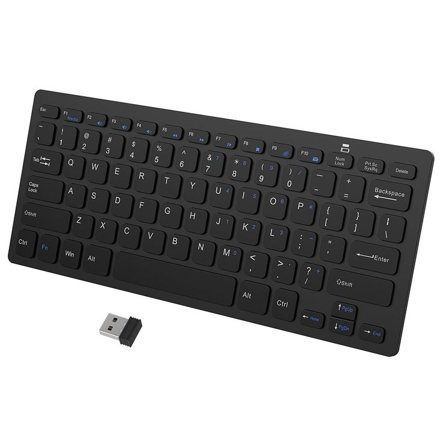

Wireless keyboards, as their name implies, run on batteries and use Bluetooth or radio frequency (RF) connectivity rather than a wired connection. Depending on the use case, you have options of varying sizes. Unlike other kinds of keyboards, some of them are incredibly small and portable, and they don't have a dedicated number pad, so users can carry them around with ease.
